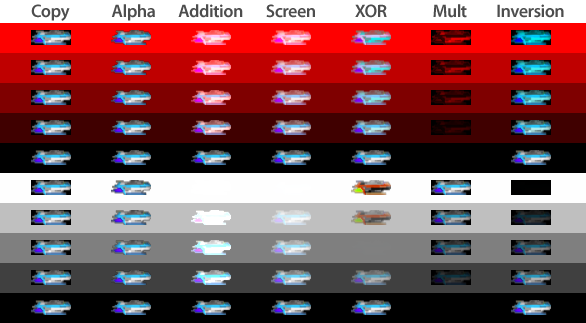
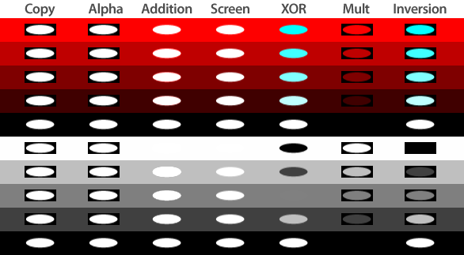

開発ガイドの目次に戻る
KRGraphics クラスの setBlendMode() 関数を使うことで、ブレンドモード（下地の色に対する描画色の重ね合わせの方法）を変更し、様々な効果を得ることができます。
最初に、アルファマスクをもった画像を描画してみましょう。様々な輝度の黒と、様々な輝度の赤の上に、この画像を重ね合わせてみます。

次に、アルファマスクをもたない画像を重ね合わせてみます。
